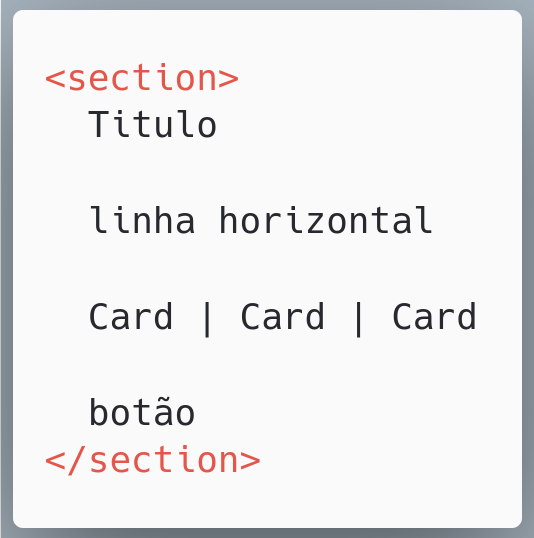
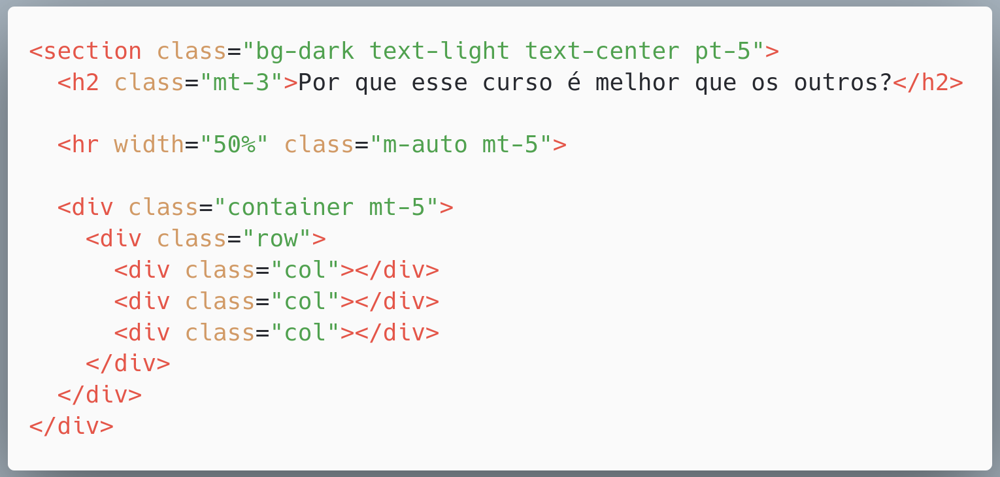
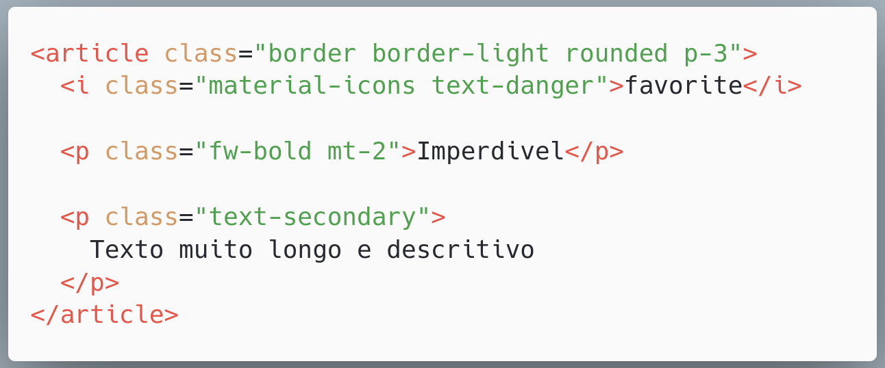
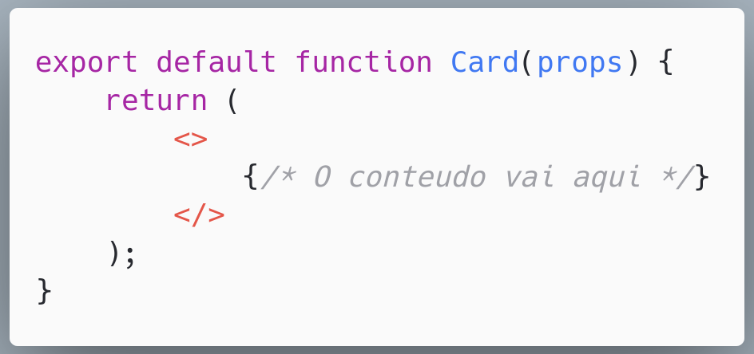
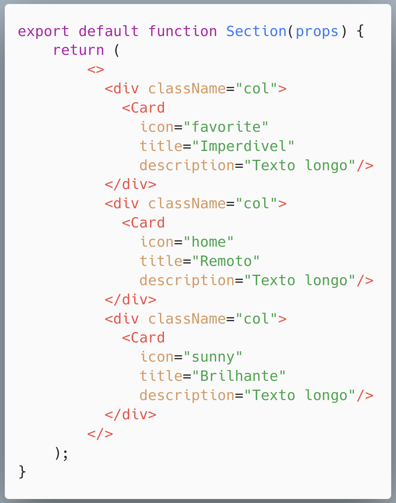

PROGRAMAÇÃO
DIALÉTICA
PROGRAMAÇÃO
DIALÉTICA
Otimismo, Resiliência e o Fim do Princípio
IGUATU
IGUATU
- Rio de Aguas Boas
- Rios desaguam
- Levam nutrientes pra outro lugar
“Nadar contra a corrente é cotidiano do nosso povo,
mas em meio ao caos,É a coragem de continuar
”
que conta.
Desde 1950, nos dizem que o programador vai acabar.
Alessandro Feitoza
- Fortaleza, Ceará
- Professor de códigos e outras computarias
- Programador/Dev/Severino
- PHP com Rapadura | PHPeste
- Bússola Social / Digital College

⚠️ Essa talk não é um mandamento
- É uma coletânea de devaneios que tenho baseados na academia, literatura, e conhecimento das ruas
- Só quero que você abra sua mente, seja mais realista consigo (e entenda a importância da academia)
- Aproveite o que achar bom e descarte o restante
1 - Por que isso é importante?
Algumas pessoas desistem (ou não começam) a faculdade, por acharem que ela não ensina o que o mercado quer
Algumas fazem faculdade, terminam, se formam, mas não conseguem entrar no mercado
Voltando... Qual o curso de vocês?
Quem você contrata quando precisa concerta uma casa?
Pedreire
E porque não Engenheire?
Ciencias/Engenharias/Tecnicos/Analistas
das Computarias das Informáticas
Técnolódia
Computação
do Latim, Computare/computo
com- Junto, Adicionar
putare- ( calcular, avaliar, analisar)
"Calcular Junto / Processar / Construir com base na lógica"
- Implementar
- Estruturar
- Planejar
- Desenhar
DESIGN?
Design
do Latim, designare
de- (de dentro, para fora)
signare- ( signum, indicar algo, marcar)
"Designar, Determinar"
Mas qual é o momento de "planejar e estruturar"?
No "inicio" do projetoPrecisamos voltar alguns passos
2 - DEFINIÇÕES
Engenharia de Software
Engenharia
do Latim, Ingeniare
Ingenium (Engenho -> Engenhar, conceber da imaginação / Maquinar)
Ingeniator ( Quem criava ou operava "engenhos")
- Eng Civil: +5000 anos
- Eng mecanica: Século XVIII / 1700 DC
Eng de Software: 1960 DC
- 1830: primeira* calculadora
- 1940: 1a geração computadores (Valvulas)
- 1960: 2a geração (transistores)
- 1971: 3a circuitos integrados (chips)
- > 1971: microprocessadores, PCs, smartphones, o escambau
Transição do Hardware pro Software
O desafio?
O desafio?
Ensinar a máquina
O desafio?
Ensinar a máquina
Programá-la
Como funciona a engenharia de software?
Como seria melhor?
Como entregar bem, mais, melhor?
3 - OUTRAS DEFINIÇÕES
Dialética
- Tese: Arquitetura limpa, DDD, padrões de projeto, boas práticas
- Antítese: Startup enxuta, MVP rápido, adaptação ao mercado
- Síntese: Processos ágeis e escaláveis, sem abrir mão da qualidade
O Caminho Dialético
- Hegel — a espiral do conhecimento: tese → antítese → síntese
- Marx — adaptação das ideias à realidade material
- Sócrates — dialética como ferramenta para questionar e evoluir
- Na terapia dialética: equilíbrio entre aceitação e mudança
Meirmão esse bicho ou tá muito fumado
Ou tem razão
Ou os dois
Processo Dialético na Engenharia de Software
- Inicia com requisitos ideais (tese)
- Enfrenta limitações reais (antítese)
- Constrói soluções pragmáticas e escaláveis (síntese)
Patterns
Soluções "gerais" repetitiveis, para resolverem problemas comuns.
Cristopher Alexander, 1977

Um padrão descreve uma solução comprovada para um problema recorrente no design
Gang of Four, 1994

Cataloga e explica padrões comuns para resolver problemas de software orientado a objetos.
E como ninguém conhece esse livro?
O mesmo livro com outra capa

Sim, é um livro de arquitetura e urbanismo
Design de Software é uma parte da Engenharia de Software
Peguemos o
REACT JS



e o REACT?


Composite Pattern
Antes de falar de Components, é preciso entender o que significa isso
Componente
o que compõe ou ajuda na composição de algo;
o que é parte constituinte de um sistema maior;
Voltando ao problema da aceitação
Cartões Perfurados
- Programar era mecânico.
- Um erro custava dias de espera.
- O Medo: "Linguagens de alto nível (Fortran) vão tirar o emprego de quem entende a máquina."
o Fortran tá contra mim
Baixo nível
vsAlto nível

O que esse código faz?

SOFTWARE LIVRE
&
Código Aberto
O manifesto de 1983 mudou tudo.
as 4 Liberdades essenciais
Todo software deve ser livre pra
- Executar
- Estudar*
- Redistribuir
- Melhorar*
Software Livre & Código Aberto
Resultado:
"Criamos" a base de toda a internet moderna.
Frameworks & Bibliotecas
Frameworks & Bibliotecas
Automatizamos o visual e a estrutura.
2014: "O Web Designer morreu".
Realidade: Focamos em UX e complexidade de dados.
Backend x Frontend
O fim do mundo como conheciamos
30 de Novembro de 2022: Lançamento do ChatGPT.O Oráculo
Substituímos a busca manual pela conversa.
Stack Overflow
ChatGPT
O Junior não "morreu", ele ganhou um tutor 24/7.
Um senior disponivel 24/7 pra ajudar os devs
O Copiloto
Desenvolvimento Sugerido (GitHub Copilot).
O Copiloto
Desenvolvimento Sugerido (GitHub Copilot).
function calculateRisk(user) {
// IA sugere a lógica baseada no contexto...
}
Não paramos de escrever, paramos de digitar o óbvio.
A ascensão do copilot começou a ganhar força em 2023
O Arquiteto
A IA dirige. O Humano é o Comandante.
O Arquiteto
A IA dirige. O Humano é o Comandante.
Saímos da sintaxe para a estratégia.
Saimos disso
Pra isso
Mas melhorou mesmo?
O Novo arquiteto
A gente é pago pra resolver problema, não pra escrever código.
A IA escreve o paragrafo!
"Mas é você o autor do livro."
AVANTE, DEVS. AVANTE, IGUATU!
DÚVIDAS?
@alessandro_feitoza
https://linkedin.com/in/AlessandroFeitoza
slides.feitoza.tec.br